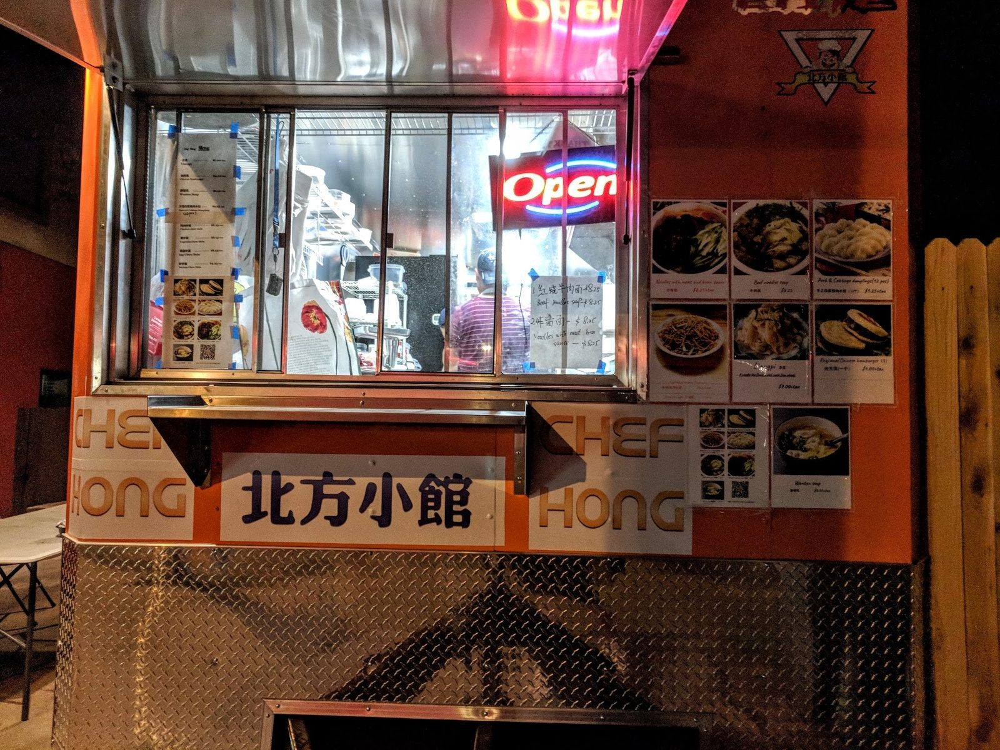

ITEM 1
Roujiamo, the Chinese hamburger
A crispy-outside, chewy-inside bun stuffed with tender, slow-braised pork. Authentic Xi’an street food.
Northern Chinese street food · Austin
A husband-and-wife food truck by UT. Roujiamo, liangpi and dumplings, hot, fresh and generous.

Street food, made fresh
The dishes to start with.
A crispy-outside, chewy-inside bun stuffed with tender, slow-braised pork. Authentic Xi’an street food.

Springy, chewy noodles tossed with cucumber, bean sprouts and gluten in a tangy-spicy chili sauce. Made for hot Texas weather.

Hand-pulled noodles, beef noodles, pork and chive dumplings, chow mein and fried rice, all freshly made.


4.8 ★ · 301 Google reviews
I stop by almost every Saturday when I’m in the UT area. The food is always delicious, and they don’t skimp on the ingredients! My favorites are the Noodle with Meat and Bean Sauce, Liangpi, and Chinese Hamburger. Highly recommend!
Huge fan of Chef Hong food truck! We ordered roujiamo (Chinese hamburger) and liangpi cold noodles, and both dishes hit perfectly. The roujiamo bun is crispy outside and chewy inside, stuffed with tender, slow-braised pork. … Portions are generous, prices are reasonable, service is quick. This is the best spot in Austin for classic Northern Chinese street food.
This place is absolutely amazing! I've had a lot of Chinese street food all over the USA, and this is real deal! Those hand pulled noodles? They taste just like your little Chinese grandmother made them for you. … The beef noodles and the pork and chive dumplings are both to die for.
Kitchen notes
Run by a husband-and-wife duo. Friendly service, hot fresh food, and no skimping on the ingredients.
Look for the orange truck with the yellow sign and the 北方小館 lettering, right between two buildings off W 24th Street, near the UT campus.

Pickup / dine in
907 W 24th St, Austin, TX 78705
Orange truck, yellow sign, between two buildings on W 24th Street. Open Wednesday to Saturday.